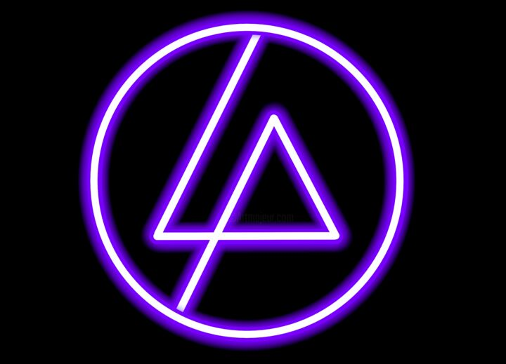

Linkin Park

Biografía
Linkin Park es una banda estadounidense de rock alternativo procedente de Agoura Hills, California formada en 1996. Integrada por Mike Shinoda, Dave Farrell, Joe Hahn, Brad Delson, Rob Bourdon y Chester Bennington, este último como voz principal. La banda comenzó con sus primeros trabajos musicales de manera independiente, en la que grabaron su primer material, llamado Xero; sin embargo, no tuvieron éxito en la búsqueda de un sello discográfico, ya que nadie mostraba interés por su trabajo. Fue hasta 1999, que con el apoyo de Jeff Blue, quien fungía como vicepresidente de Warner Records, lograron firmar su primer contrato. El nombre proviene de un juego de palabras que hace referencia al Lincoln Park en Santa Mónica.
Discografía
Hybrid Theory (2000)
- Papercut
- One Step Closer
- With You
- Points of Authority
- Crawling
- Runaway
- By Myself
- In the End
- A Place for My Head
- Forgotten
- Cure for the Itch
- Pushing Me Away
Meteora (2003)
- Foreword
- Don't Stay
- Somewhere I Belong
- Lying from You
- Hit the Floor
- Easier to Run
- Faint
- Figure.09
- Breaking the Habit
- From the Inside
- Nobody's Listening
- Session
- Numb
Minutes to Midnight (2007)
- Wake
- Given Up
- Leave Out All the Rest
- Bleed It Out
- Shadow of the Day
- What I've Done
- Hands Held High
- No More Sorrow
- Valentine's Day
- In Between
- In Pieces
- The Little Things Give You Away
A Thousand Suns (2010)
- The Requiem
- The Radiance
- Burning in the Skies
- Empty Spaces
- When They Come for Me
- Robot Boy
- Jornada del Muerto
- Waiting for the End
- Blackout
- Wretches and Kings
- Wisdom, Justice and Love
- Iridescent
- Fallout
- The Catalyst
- The Messenger
Living Things (2012)
- Lost in the Echo
- In My Remains
- Burn It Down
- Lies Greed Misery
- I'll Be Gone
- Castle of Glass
- Victimized
- Roads Untraveled
- Skin to Bone
- Until It Breaks
- Tinfoil
- Powerless
The Hunting Party (2014)
- Keys to the Kingdom
- All for Nothing (ft. Page Hamilton)
- Guilty all the Same (ft.Rakim)
- The Summoning
- War
- Wastelands
- Until It's Gone
- Rebellion (ft. Daron Malakian)
- Mark the Graves
- Drawbar (ft. Tom Morello)
- Final Masquerade
- A Line in the Sand
One More Light (2017)
- Nobody Can Save Me
- Good Goodbye
- Talking to Myself
- Battle Symphony
- Heavy
- Sorry for Now
- Halfway Right
- One More Light
- Sharp Edges